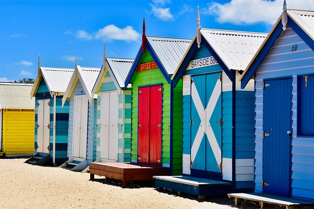

Australia

Central Station (Melbourne):
Melbourne’s Central Station, officially known as Southern Cross Station, is a major transport hub in the city.
With its unique wave-shaped roof and modern design, it's a gateway to regional and interstate travel, connecting
like the Grand Palace and Wat Arun, offering visitors a dynamic and colorful experience.
locals and tourists alike.

Great Ocean Road:
The Great Ocean Road is one of Australia’s most scenic coastal drives. Stretching along the southern
coast of Victoria, it offers breathtaking views, surf beaches, lush rainforests, and iconic landmarks
the Twelve Apostles.

Brighton Bathing Boxes:
The Brighton Bathing Boxes are a row of colorful wooden beach huts lining the sand at Brighton Beach in Melbourne,
Australia. Iconic for their bright designs and historic charm, they are a popular photo spot and represent
a classic part of Melbourne’s seaside culture.
Image by Pixaday